Quem somos?
Escolha o seu artista
- 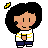 Fannie Fanye
- 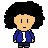 Monshoker
- 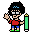 Cavaleiro de Lápis
- Paulo o Pensador
 Dois Oliveiras
Dois Oliveiras- 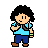 Elivan
- 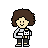 sfail
- 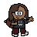 Looba
- 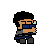 Milber
- 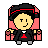 Renan Gomes
- 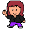 Bruna
- 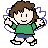 Izabelle
- 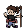 Mai
Fannie Fanye
Real name : Stefanie
Artista em fase de aprendizagem mas não me subestime :V
Gosto muito de pintar principalmente com aquarela.
Eu desenho muitas coisas fofas (por pouco tempo°^°) E por último não muito importante sou @Fanny_Fanye_.
Monshoker
Nasci na época errada, as coisas são muito rápidas. Parei de tentar achar sentido a vida agora eu tento aproveita-la com as coisas que eu gosto de fazer, e eu tenho muito tempo para desenha las.
Não custa nada me seguir no insta, sou gente boa, juro: @monshoker
Cavaleiro de Lápis
Real name : Josué
Hooray, saudações senhores. Eu sou aquele conhecido como Josué (@cavaleiro_do_lapis )e faço parte deste coletivo. Sou um jovem que nasceu no tempo certo para usar a maior dadiva dos homems: a internet! Minha maior paixão são animes antigos(isso será bem notório na minhas artes) e música obscura (tem muitas pérolas escondidas por ai!) Não sou muito fã de colorir meus desenhos, mas vez e outra talvez saia uma arte colorida... Enfim, esta é a minha apresentação, espero que gostem das artes que nosso humilde grupo que ainda alcançará as estrelas! Nós vemos por ai...
Paulo o pensador
Olá... Meu nome é Paulo Roberto (@ludineio21) mais conhecido como Paulo Pensador. Eu escrevo poemas e poesias e me deram esse apelido em um blog onde eu postava meus textos. Tenho uma página no Facebook chamada Quintal das Letras, lá eu posto tudo que escrevo atualmente. Sou uma pessoas que respira arte e vivo dela desde os meus 23 anos, me sustento dela também. Sou escritor, desenhista, cenógrafo, aderecista e as vezes faço trabalhos como artista plástico.
Faço parte de um grupo artístico chamado Auto da Lua Crescente, lá trabalhamos com teatro, dança e canto. Já escrevi 3 espetáculos chamados: Santos e flores na quadra junina, Matumba para o dia da consciência Negra e o mais recente chamado Círios das Águas e do tempo. Também faço parte de um grupo de contação de histórias chamado Encarados de Aruanda. Agora estou aqui nos Capivaras e pretendo dar meu melhor para o coletivo
Dois Oliveiras
Olá, me chamo Cleyson (@dois.oliveiras e @cleyson_draw) e sou um dos mais velhos do Coletivo. Gosto de muitas coisas, pois quero sempre estar de bem com a vida. Gosto de ouvir as pessoas e se preciso ajudá-las de bom grado.
Sou movido a base de música, quadrinhos e artes em geral. Vamos lá, com o Coletivo Capivara Astronauta, vou te apresentar a cada novo trabalho ilustrações cheias de cor e vida.
Ahoy!!!
Elivan
Oi, de boa? Sou o Elivan (@elivan47). Por muito tempo fiquei perdido sobre o que eu iria fazer da vida e que profissão seguiria. No final o mundo das artes e dos quadrinhos foi onde eu mais me encontrei. Contar histórias, entreter, causar sentimentos e reflexões...isso tudo é incrível demais. É o que quero fazer da minha vida, e é um modo de deixar (talvez) minha marca no mundo. Uma coisa que ainda vai existir e ser lembrada depois que eu partir desse mundo.
O coletivo capivara astronauta é o lugar onde eu, junto das pessoas maravilhosas que integram esse grupo, espero conseguir isso.
Sfail
Real name: Sara
Oi! Me chamo Sara ( @sarafailache / @sfail_ ) Sou uma nova membro do coletivo, trabalho mais com artes digitais (faz pouco tempo que peguei uma mesa digitalizadora, antes desenhava pelo celular). Assim como a maioria daqui amo animes (talvez um pouco demais), e sou viciada em ler, principalmente mangás e webcomics de preferência dos gêneros aventura, fantasia, seinen, BL's (Yaois/Shoune-ai) e shoujos.
Como a imagem mostra eu amo gatos (e animais em geral), sou amante da natureza e da calmaria. Gosto de simplicidade, pessoas honestas e não arrogantes (mas pode debochar, claro). Não sou muito de falar (porém depende), introvertida (tímida não).
Obs: amo chapéus 💛
Looba
Real name : Maria Luiza
Olá! Meu nome é Maria Luiza Baganha, mas prefiro que me chamem de Luiza ou Looba.
Sou ilustradora e animadora, formada em Design na UEPA e trabalhei como animadora no Estúdio Iluminuras de animação.
No instagram e no twitter, minha conta de desenhos é @loobaloob
Ainda não encontrei um estilo de desenho e coloração que me deixasse 100% satisfeita, mas gosto muito de experimentar e ficar mudando. Antes parecia errado não ter um estilo único e diferentão, mas hoje em dia, já acho legal desenhar de formas variadas!
Meu estilo oscila bastante entre cartoon e manga e é basicamente um reflexo das minhas grandes paixões nos ramos de animação e quadrinhos. Desde que eu era criança, eu já queria ser artista e desenhar minhas próprias histórias, mas por adversidades e falta de coragem, desisti da ideia de ser quadrinista. Nesse meio tempo, encontrei minha paixão por animação e acabei revivendo essa vontade de escrever e desenhar quadrinhos! Ainda sou um pouco insegura, mas espero produzir muitas coisas legais junto com meus amigos do Capivara Astronauta!
Sou uma pessoa extremamente medrosa e não gosto de imagens muito fortes ou assustadoras, mas amo histórias e livros de terror... A dualidade do ser humano... Minha comida favorita é pizza e adoro comer besteira e doces (Oops)! Bichinhos são a fonte universal de serotonina e amo tanto gatos quanto cachorros! Gosto de ler sobre mitologia de civilizações antigas e escutar podcasts de true crime e histórias de terror. Meu gosto musical é uma farofa de ovo com tudo quanto é coisa e eu morro de vergonha de compartilhar com os outros!
Milber
Meu nome é Milber (@milbertvi ), tenho 20 anos e eu sou o único integrante que não desenha, sou roteirista. Amo escrever e definitivamente é o que eu quero pra minha vida ao ponto de eu ter desistido de qualquer tipo de carreira "normal" pra me dedicar só a isso.
Me especializo em quadrinhos por ser minha mídia preferida.
Essa é minha última tentativa e tô fazendo tudo o que posso pra isso funcionar.
Renan Gomes
Oi, eu sou o Renan Gomes (@renan.gomes21). Gosto muito de ler. Livros são pra mim o alimento da alma. Assim como a escrita, a música. Além disso gosto de desenhar pra complementar minha veia artística. Tudo relacionado a arte me encanta. E também não dispenso uma boa e velha corrida noturna.
Bruna
Oi, me chamo Bruna Mercês,faço parte desse grupo incrível de artistas.
Sou estudante em artes visuais com muito amor. Ainda estou em processo construtivo nesse meio artístico, estou aprendendo de tudo um pouco, hoje trabalho com biscuit arte de molda, segue aí (@b.artebiscuit)aqui vocês vão ver um pouco do meu trabalho.
Sou uma pessoa simples, que gosta da natureza
As coisas que fazem a gente se sentir verdadeiramente humanos,essas sim, valem a pena ser vivida.
Izabelle
Olá, eu sou a Izabelle eu nascida em 2002 (@_harupriart_/@uerba_ellebazi), gosto de artes plasticas, jogos e até umas coisa com fotografias. É a minha primeira vez em um coletivo então eu estou realmente estou animada ♡♡♡ adoro testar novos estilos e cores tanto na arte digital quanto na tradicional. obrigada por nos apoiarem ♡♡